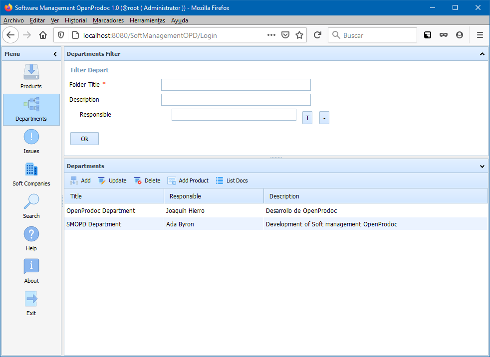

The departments section allows to manage the departments that build internally products or libraries and have contact information and description of their functions. The departments didn't need to be at the same level of the organization of the company, they could be in their real "position", that is under different directions or area. SMO will display them independently of the position and allow to modify them. However, the the position is in different branches of the company structure, they will need to be created from OpenProdoc selecting the specific folder. Additionally, it's possible to "hide" to some users any department from the SMO list using the OpenProdoc ACLs. This allow to "hide" departments that didn't develop software o that develop some restricted software. Those departments only will visible for authorized users.
With the default configuration, the filter area of the departments will show three filters:
With the default configuration, the list area display the columns:
Selecting a department, and always if the security permissions asigned allow it, it is possible to use the options:

In SMO Tree there is a complete view of operations and forms.